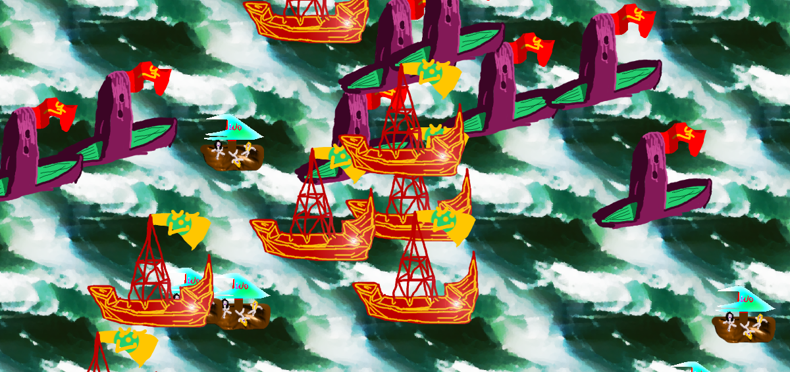

|
Interview with Dany Burton
31.08.2017
"In 2014 I was voted the greatest in the world, and now i'm BACK!!!!!!!!!!!! with 50% more killing your pets!!!"
Is this DANY BURTON? Are you ready for the interview?? If yes, proceed to it!
This is DANY BURTON and I am proceeding to the interview as we speak. 1. So how are you today? I'm pretty good, though I worked on games so much yesterday that today I am a bit exhausted. 2. What inspired you to make games? When I was young my parents showed me a computer game (I think it was Jazz Jackrabbit 2) for the first time and I was fascinated, then a couple of years later my dad bought a copy of 'the Games Factory' and I became hooked on making games and have been doing so ever since. 3. You have your own language, how does it work? When did it you decided to make it and why? Well the language is a bit similar to english, but the words all have different endings depending on how they fit into the sentence so you can say them in any order. Some other things need to be said in the right part of the sentence like the time and stuff. I decided to make it back when I was in highschool, I used to build some shrines and things, and I would write inscriptions in my language. It was also nice to know nobody would read things that I had written down if I wanted them to be secret. It's too bad nobody else can read it though, as a language only one person speaks doesn't seem useful unless you are talking to voices in your head 4. Do many people play your games? Do you get reviews? A few people play my games. Most of them are people I know, but there are some people who have discovered them somehow which is cool. One person commented on my game Vobbangora Gorad Dortsars "I can get seizures but I still loved the graphics", which I thought was pretty funny. Some russian letsplayers have played Wanking Simulator, and one even made a "Montage Parody" of it, but I think he raised the quality standard of his videos and took that one down :p Vobbangora Gorad Dortsars
5. What could you tell us about game creation? What's the hardest part of it? What's the easiest? What's the most fun part?Game creation is quite cool, but I would recommend not to code your game up in C or something else silly like that. You want to be a Game Designer, not a fucking programmer, and if you spend all of that time programming shit you will never get any practice at the import part which is the GAME DESIGN. Also, a lot of people say "don't rush and polish your games before release" these people are stupid and probably have never done very much creative in their lives. I say you should release as much stuff as possible (though polishing games sometimes when you want it to be real good is ok). Polishing is not practice at making cool games, and it doesn't make you any better, but making new shit all the time does make you better and you can keep putting the cool things you find out into your next game. the hardest part is continuing when you suspect your game is no good, the easiest part is writing out storylines and things, which sort of come to life as I write them. The most fun part is when high powered inspiration takes over my body and I type and draw at double speed making great shit and putting everything in my brain right down in the game while laughing wildly. that doesn't happen that often, though. 6. Are there any games that you would recommend to play? I think super mario 64 for the nintendo 64 is a really good game, I would recommend you to play that RIGHT NOW. The character designs in it are very good too I think. especially the bug creatures. Mario64
7. Which one of your games do you think people should play more? Boating for Jesus has some exploring you can do to visit the different pirates and islands, so I would say that one. Before the end of this year though I am going to release a new game called League of Scumbags A: PROTO DOGS Extreme Spell, and when that comes out, that will be the one people should play.  Boating for Jesus
8. What is your worst game? Wanking Simulator. (though it also gets by far the most views, and even earned me $5 in ad revenue). I made it in 3 hours while very drunk. 9. You also make a lot of music, what can you tell us about your tunes? My favourite songs by me are the ones where I feel sense of great excitement and inspiration, as that is my favourite state to be in. A lot of my music also reveals anger, but I have found that getting those feelings out in song tend to stop me from doing weird things in real life. I haven't released much music in the last while, but I've got something pretty good in the works. 10. Would you either get 10 bux and 10 great lookin women, or 10 great lookin bux and 10 fat ugly women? I would like 10 bux and 10 great lookin women, and then sell half of them for more bux 11. Here is a riddle, a man went to the shop and he got ran over by a shopping cart. How much money did he have? I think he had 10 great lookin bux, since some great looking women might save him, but the fat ugly women were probably too lazy to stop the cart. 12. Do you believe in miracles? I do believe in them, though I don't necessarily think that they cannot be explained by science, I just don't care whether they can or not because as far as I am concerned, they are miracles that have been put into your brain one way or another. 13. Your cathphrase? My name is Dany Burton and I piss on the curtain 14. Final words? Any tips for the young game creators, and to the old? To the old I say drink the blood of the young to prolong your life, and to the young I say follow me on itch.io for a free blood transfusion. Thank you Dany!
Back to Texts |